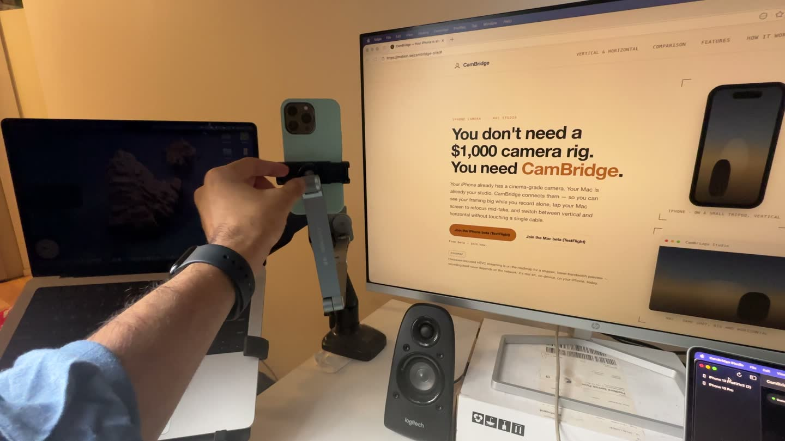

Troubleshooting guide
Continuity Camera not working on Mac: fixes (and a fallback)
Continuity Camera lets a Mac use your iPhone as its webcam. When it works, the iPhone just appears in FaceTime, Zoom or OBS. When it does not, there is no error message, the iPhone is simply missing.
Almost every case comes down to one of Apple's requirements. This guide goes through them in order, then covers app-specific fixes, and ends with a fallback if what you really want is to record yourself.

Fix Continuity Camera step by step
These steps follow Apple's own requirements and help page (Apple support: Continuity Camera). Test after each one.
Check the devices and software
Apple lists iOS 16 or later on an iPhone XR or later (2018 or newer) and macOS Ventura 13 or later. Continuity Camera works with one iPhone and one Mac at a time.
Use the same Apple Account
Both devices must be signed in to the same Apple Account with two-factor authentication. A different account on the Mac is a common cause.
Turn on Continuity Camera on the iPhone
Open Settings, tap General, then AirPlay & Continuity (or AirPlay & Handoff), and make sure Continuity Camera is on. It is on by default.
Turn on Wi‑Fi and Bluetooth, turn off sharing
Both devices need Wi‑Fi and Bluetooth on and must be near each other. The iPhone must not be sharing its cellular connection (Personal Hotspot), and the Mac must not be sharing its internet. For wireless use, the Mac must not be using AirPlay or Sidecar.
Mount the iPhone the way Apple expects
The iPhone should be near the Mac, locked, stable, with the rear cameras facing you and not covered. Landscape lets apps pick it automatically. If you have not unlocked the iPhone since it restarted, unlock it once, then lock it again.
Plug in a cable
Connect the iPhone to the Mac with USB. Tap Trust on the iPhone if it asks. A cable also fixes most wireless drop-outs.
Pick the iPhone in the app
If the app does not switch on its own, choose the iPhone in the app's video or camera menu. In FaceTime it is in the Video menu.
Update and restart
Install the latest macOS, iOS and app updates. Then restart the iPhone and the Mac.
Fixes for specific apps
- Google Meet or any browser call. The browser needs camera access: System Settings > Privacy & Security > Camera. Restart the browser, then choose the iPhone in the site's camera picker.
- Zoom, Teams and other call apps. Same permission check, then choose the iPhone in the app's video settings. Quit and reopen the app if the list is old.
- OBS Studio. Add a Video Capture Device source and pick the iPhone. See the OBS guide.
- No sound from the iPhone mic. The iPhone mic is a separate input. Pick it in the app's mic setting, or in System Settings > Sound > Input.
On a Mac mini or a desktop Mac
A Mac mini has no built-in camera, so Continuity Camera is often the only camera it has. The same checks apply. It also has no built-in microphone, so pick the iPhone mic or a USB mic in the app.
A fallback when you want to record, not call
Many people reach for Continuity Camera to film themselves with the iPhone's better camera, with the Mac as the screen. If that is your goal, a remote camera app is a different route that does not depend on Continuity Camera.
CamBridge is one. It has its own app on the iPhone and on the Mac and connects them over local Wi‑Fi or USB, with no account. The Mac shows the live view, you control focus, exposure, zoom and record from the Mac, and the iPhone records the 4K file and copies it to a folder on your Mac. It needs iOS 17 and macOS 14 or later.
It is not a fix for calls: CamBridge does not show up as a camera in Zoom, Meet, FaceTime or OBS. See Continuity Camera vs CamBridge for which job each one does.
Limits to know about
Continuity Camera works with one iPhone and one Mac at a time, and older iPhones and Macs that do not meet Apple's requirements cannot use it. CamBridge is a beta for iPhone and Mac only and is not a webcam.
FAQ
Why is my iPhone not showing up as a camera on my Mac?
Usually one requirement is missing: a different Apple Account, Continuity Camera turned off on the iPhone, Wi‑Fi or Bluetooth off, Personal Hotspot on, or the Mac using AirPlay or Sidecar. Lock and mount the iPhone, then try a USB cable.
Why does Continuity Camera not show up in Google Meet or Zoom?
Check that the browser or app has camera access in System Settings > Privacy & Security > Camera, then restart it and pick the iPhone in its camera menu.
Does Continuity Camera work on a Mac mini?
Yes. It works with any Mac that runs macOS Ventura 13 or later, and a Mac mini has no built-in camera, so it is a common setup.
Why does Continuity Camera keep disconnecting?
Answering a call on the iPhone, unlocking it, or moving it out of Bluetooth range pauses or ends the session. Lock and mount it again. A USB cable gives the steadiest link.
My iPhone left Wi‑Fi while using Continuity Camera. Is that normal?
Apple says the iPhone can leave Wi‑Fi to optimize Continuity Camera and use cellular data for background tasks. Plug the iPhone into the Mac, or turn off cellular data, to stop it.
Can CamBridge replace Continuity Camera for calls?
No. CamBridge is not a webcam and does not show up in call or streaming apps. It is for recording yourself with the iPhone and controlling the camera from the Mac.
Try it with your own iPhone and Mac
CamBridge is a free TestFlight beta. iPhone needs iOS 17 or later. Mac needs macOS 14 or later. No account, no cloud.